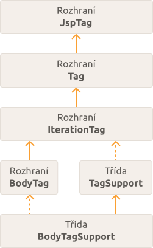
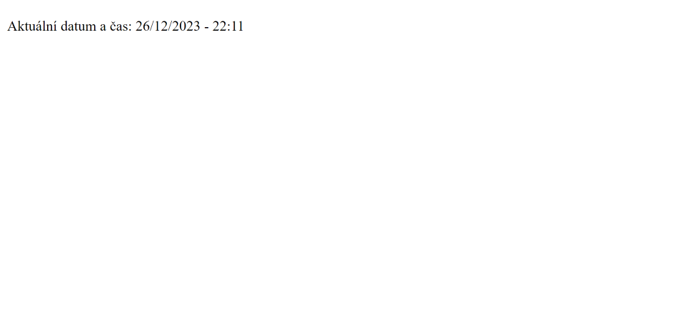
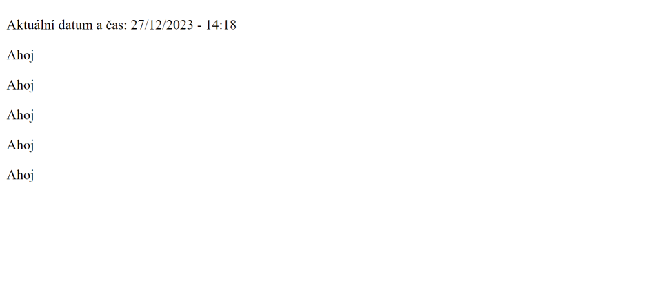

JSP custom tagy
V této části se naučíme vytvářet vlastní tagy. Jejich tvorbou můžeme eliminovat použití scripletů a oddělit business logiku od JSP stránky.
Balíček javax.servlet.jsp.tagext
Třídy a rozhraní pro custom tagy obsahuje balíček javax.servlet.jsp.tagext. Jak můžete vidět v následujícím obrázku, kořenové rozhraní je JspTag. Od tohoto rozhraní dále dědí rozhraní Tag, IterationTag a BodyTag. Balíček také obsahuje třídu TagSupport a BodyTagSupport. Třída TagSupport slouží pro tvorbu tagů, u kterých nemusíme přímo pracovat s tělem tagu a třída BodyTagSupport pro tvorbu tagů, kde s tělem tagu pracovat musíme. Třída TagSupport implementuje rozhraní IterationTag a třída BodyTagSupport implementuje rozhraní BodyTag a dědí od třídy TagSupport.
Rozhraní JspTag
Rozhraní JspTag slouží jako základní rozhraní. Je to hlavně kvůli organizaci a typové bezpečnosti.
Rozhraní Tag
Rozhraní Tag je podrozhraním třídy JspTag. Poskytuje metody pro provedení akce na začátku a konci tagu.
Následující tabulka popisuje statické vlastnosti rozhraní Tag.
| Název | Popis |
|---|---|
| EVAL_BODY_INCLUDE | Pokud tuto hodnotu metoda doStartTag vrátí, tak to signalizuje, že se má tělo tagu zpracovat a přidat na stránku. |
| SKIP_BODY | Pokud tuto hodnotu metoda doStartTag vrátí, tak to signalizuje, že se má přeskočit tělo tagu (nemá se přidat na stránku). |
| EVAL_PAGE | Pokud tuto hodnotu metoda doEndTag vrátí, tak to signalizuje, že se má po zpracování tagu pokračovat ve vykonávání zbytku JSP stránky. |
| SKIP_PAGE | Pokud tuto hodnotu metoda doEndTag vrátí, tak to signalizuje, že se nemá po zpracování tagu vykonat zbytek JSP stránky. |
Následující tabulka popisuje metody, které rozhraní Tag definuje.
| Metoda | Návratový typ | Popis |
|---|---|---|
| doStartTag() | int | Zpracovává startovní tag. |
| doEndTag() | int | Zpracovává ukončující tag. |
| getParent() | Tag | Vrací nejbližšího předka (nejbližší tag handler custom tagu, ve kterém se custom tag nachází) tagu. |
| release() | void | Tato metoda se volá po dokončení životního cyklu tagu (doStartTag, doAfterBody, doEndTag). Pokud potřebujeme, tak s její pomocí můžeme po zpracování tagu uvolnit nějaké prostředky a tak podobně. |
| setPageContext(PageContext pc) | void | Pomocí této metody nastavuje container (Tomcat) vlastnost pageContext. |
| setParent(Tag t) | void | Pomocí této metody nastavuje container (Tomcat) předka (nejbližší tag handler custom tagu, ve kterém se custom tag nachází) tagu. |
Rozhraní IterationTag
Rozhraní IterationTag rozšiřuje rozhraní Tag a přidává metodu doAfterBody. Také přidává jednu statickou vlastnost, kterou popisuje následující tabulka.
| Název | Popis |
|---|---|
| EVAL_BODY_AGAIN | Pokud tuto hodnotu vrátí metoda doAfterBody, tak se tělo tagu zpracuje ještě jednou. |
Následující tabulka popisuje metodu doAfterBody.
| Metoda | Návratový typ | Popis |
|---|---|---|
| doAfterBody | int | Volá se po zpracování těla tagu. |
Třída TagSupport
Třída TagSupport implementuje rozhraní IterationTag. Implementuje tedy jeho metody a metody jeho nadrozhraní. Jako vlastnosti má id a instanci třídy PageContext, které jsou nastaveny jako protected (můžeme je tedy používat uvnitř podtříd). Popisuje je následující tabulka.
| Název | Typ | Popis |
|---|---|---|
| id | String | Hodnota id atributu nebo null, pokud id atribut není nastavený. |
| pageContext | PageContext | Instance třídy PageContext. |
Kromě předchozích vlastností přidává třída TagSupport také pár vlastních metod, které popisuje následující tabulka.
| Metoda | Návratový typ | Popis |
|---|---|---|
| static findAncestorWithClass(Tag from, Class klass) | Tag | Statická metoda, která slouží k nalezení předka, který je instancí předané třídy. Jako první parametr se předává tag, pro který chceme předka najít a jako druhý třída. |
| getId() | String | Getter pro vlastnost id. |
| setId(String id) | void | Setter pro vlastnost id. |
| getValue(String k) | Object | Nevím k čemu to slouží. Možná pro spolupráci mezi vnořenými tagy? Tady je otázka, u které si můžete přečíst odpovědi. |
| getValues() | Enumeration<String> | Nevím k čemu to slouží. Možná pro spolupráci mezi vnořenými tagy? |
| removeValue(String k) | void | Nevím k čemu to slouží. Možná pro spolupráci mezi vnořenými tagy? |
| setValue(String k, Object o) | void | Nevím k čemu to slouží. Možná pro spolupráci mezi vnořenými tagy? |
Rozšířením třídy TagSupport můžeme vytvořit tag handler. Co to znamená si později vysvětlíme.
Rozhraní BodyTag
Rozhraní BodyTag rozšiřuje rozhraní IterationTag. Přidává následující statickou vlastnost.
| Název | Popis |
|---|---|
| EVAL_BODY_BUFFERED | Pokud tuto hodnotu metoda doStartTag vrátí, tak to signalizuje, že se má vytvořit nový buffer (instance třídy BodyContent). |
Také přidává metody, které popisuje následující tabulka.
| Metoda | Návratový typ | Popis |
|---|---|---|
| doInitBody() | void | Volá se před zpracováním těla tagu. |
| setBodyContent(BodyContent b) | void | Tuto metodu používá container (Tomcat) pro nastavení instance třídy BodyContent. |
Třída BodyTagSupport
Třída BodyTagSupport dědí od třídy TagSupport a implementuje rozhraní BodyTag. Kromě metod implementovaných podle rozhraní a zděděných z nadtřídy obsahuje také dvě vlastní, které jsou popsány v následující tabulce.
| Metoda | Návratový typ | Popis |
|---|---|---|
| getBodyContent() | BodyContent | Vrací instanci třídy BodyContent. |
| getPreviousOut() | JspWriter | Nevím k čemu to slouží. |
Rozšířením třídy BodyTagSupport můžeme vytvořit tag handler pro tagy, které potřebují pracovat s tělem.
Co je potřeba k vytvoření custom tagu
K vytvoření custom tagu je potřeba provést následující kroky:
- Vytvoření tag handleru pro provedení akce tagu.
- Vytvoření TLD (Tag Library Descriptor) souboru a nadefinování tagu.
- Naimportování TLD souboru (knihovny tagů) do JSP stránky pomocí direktivy taglib.
Tvorba custom tagu
Pro ukázku si vytvoříme custom tag, pomocí kterého budeme moci na stránce vypsat aktuální datum a čas. Založíme si nový projekt a začneme tím, že si v souboru pom.xml kromě závislosti javax.servlet nadefinujeme také závislost javax.servlet.jsp. Předtím jsme to nepotřebovali, protože jsme používali jen JSP soubory. Teď již ale budeme JSP API používat i v Java třídách.
- src
- main
- java
- resources
- webapp
- test
- java
- resources
- main
- target
<project xmlns="http://maven.apache.org/POM/4.0.0" xmlns:xsi="http://www.w3.org/2001/XMLSchema-instance" xsi:schemaLocation="http://maven.apache.org/POM/4.0.0 https://maven.apache.org/xsd/maven-4.0.0.xsd">
<modelVersion>4.0.0</modelVersion>
<groupId>io.github.jirkasa</groupId>
<artifactId>tvorba-custom-tagu</artifactId>
<version>0.0.1-SNAPSHOT</version>
<packaging>war</packaging>
<name>tvorba-custom-tagu</name>
<properties>
<project.build.sourceEncoding>UTF-8</project.build.sourceEncoding>
<project.reporting.outputEncoding>UTF-8</project.reporting.outputEncoding>
<java.version>17</java.version>
<maven.compiler.source>${java.version}</maven.compiler.source>
<maven.compiler.target>${java.version}</maven.compiler.target>
</properties>
<dependencies>
<dependency>
<groupId>javax.servlet</groupId>
<artifactId>javax.servlet-api</artifactId>
<version>4.0.1</version>
<scope>provided</scope>
</dependency>
</dependencies>
<dependency>
<groupId>javax.servlet.jsp</groupId>
<artifactId>jsp-api</artifactId>
<version>2.2</version>
<scope>provided</scope>
</dependency>
</project>Po přidání JSP závislosti se můžeme pustit do tvorby našeho custom tagu. Začneme s tvorbou tag handleru. Vytvoříme třídu, kterou pojmenujeme jako AktualniDatumACasTagHandler a nastavíme jí, že dědí od třídy TagSupport. Jako vlastnost jí můžeme zatím nastavit instanci třídy DateTimeFormatter z balíčku java.time.format, který budeme používat při formátování aktuálního datumu a času. Třídu umístěte do nějakého Java balíčku. Tady v ukázce používáme balíček "io.github.jirkasa.taghandlers".
package io.github.jirkasa.taghandlers;
import java.time.format.DateTimeFormatter;
import javax.servlet.jsp.tagext.TagSupport;
public class AktualniDatumACasTagHandler extends TagSupport {
private DateTimeFormatter formatter;
public AktualniDatumACasTagHandler() {
// vytvoření formatteru, pomocí kterého budeme formátovat aktuální datum a čas
formatter = DateTimeFormatter.ofPattern("dd.MM.yyyy HH:mm");
}
}Teď v naší tag handler třídě implementujeme metodu doStartTag. Tím vlastně provedeme nějakou akci pro začátek tagu (počáteční tag). V našem případě vypíšeme na stránku aktuální datum a čas. Zavoláme metodu now třídy LocalDateTime z balíčku java.time a výsledek předáme do formatteru ke zformátování. Tím získáme zformátovaný aktuální datum a čas. Poté získáme JspWriter z pageContext objektu a aktuální datum a čas s jeho pomocí vypíšeme. Objekt pageContext je vlastností třídy TagSupport, takže k němu máme přístup. Na konci metody ještě musíme vrátit hodnotu, která signalizuje, jakým způsobem se má pokračovat v provádění kódu. V našem přídadě vrátíme SKIP_BODY, což signalizuje, že se má přeskočit zpracování těla tagu (pokud by tag nějaké tělo měl). Následující ukázka ukazuje upravený kód.
package io.github.jirkasa.taghandlers;
import java.io.IOException;
import java.time.LocalDateTime;
import java.time.format.DateTimeFormatter;
import javax.servlet.jsp.JspException;
import javax.servlet.jsp.JspWriter;
import javax.servlet.jsp.tagext.TagSupport;
public class AktualniDatumACasTagHandler extends TagSupport {
private DateTimeFormatter formatter;
public AktualniDatumACasTagHandler() {
// vytvoření formatteru, pomocí kterého budeme formátovat aktuální datum a čas
formatter = DateTimeFormatter.ofPattern("dd.MM.yyyy HH:mm");
}
@Override
public int doStartTag() throws JspException {
// získání aktuálního datumu a času
String currentDateAndTime = formatter.format(LocalDateTime.now());
// získání JSP writeru a vypsání aktuálního datumu a času na stránku
JspWriter out = pageContext.getOut();
try {
out.print(currentDateAndTime);
} catch (IOException e) {
System.out.println(e);
}
return SKIP_BODY;
}
}Naše tag handler třída je hotová. Vytvoříme si TLD soubor, ve kterém si nadefinujeme tag a náš tag handler pro něj použijeme. TLD (Tag Library Descriptor) soubor vlastně slouží k vytvoření knihovny tagů. Vytváří se ve složce "src/main/webapp/WEB-INF" a píšeme v něm XML kód, pomocí kterého knihovnu a její tagy definujeme. Kořenovým elementem je taglib. Jeho podelement tlib-version slouží ke specifikování verze knihovny, podelement jsp-version ke specifikování verze JSP, pro kterou byla knihovna navržena, a short-name slouží ke specifikování názvu knihovny. Podelementem tag definujeme jednotlivé tagy knihovny.
Knihovnu tagů v našem projektu můžeme pojmenovat třeba jako "Moje tagy". Ve složce "src/main/webapp/WEB-INF" si tedy vytvoříme soubor "MojeTagy.tld". Následující ukázka pro něj ukazuje kód.
- src/main/webapp/WEB-INF
- src/main/webapp/WEB-INF
<taglib>
<tlib-version>1.0</tlib-version>
<jsp-version>2.2</jsp-version>
<short-name>Moje Tagy</short-name>
</taglib>Náš tag si můžeme v TLD souboru nadefinovat prostřednictvím tag elementu. Pomocí jeho podelementu name určíme název tagu a prostřednictvím tag-class podelementu pro něj nastavíme tag handler. Následující ukázka ukazuje upravený kód.
- src/main/webapp/WEB-INF
<taglib>
<tlib-version>1.0</tlib-version>
<jsp-version>2.2</jsp-version>
<short-name>Moje Tagy</short-name>
<tag>
<name>aktualniDatumACas</name>
<tag-class>io.github.jirkasa.taghandlers.AktualniDatumACasTagHandler</tag-class>
</tag>
</taglib>Nyní si můžeme naši knihovnu tagů zkusit naimportovat do JSP stránky a použít ji. Vytvoříme si tedy JSP stránku, kterou můžeme pojmenovat třeba jako "stranka.jsp". Pomocí direktivy taglib si na stránce knihovnu tagů naimportujeme. Jako atribut uri nastavíme cestu ke knihovně a atributem prefix nastavíme, pod jakým názvem budeme chtít tagy z knihovny používat. Poté na stránce použijeme tag "aktualniDatumACas", který jsme si nadefinovali a vypíšeme tak na stránku aktuální datum a čas. Následující ukázka ukazuje celý kód stránky.
- src/main/webapp
<%@ page contentType="text/html" pageEncoding="UTF-8"%>
<!-- Nadefinování knihovny tagů, kterou chceme používat. -->
<%@ taglib uri="WEB-INF/MojeTagy.tld" prefix="m" %>
<!DOCTYPE html>
<html>
<head>
<meta charset="UTF-8">
<title>Tvorba custom tagu</title>
</head>
<body>
<p>Aktuální datum a čas: <m:aktualniDatumACas /></p>
</body>
</html>Pokud si aplikaci spustíte a navštívíte http://localhost:8080/tvorba-custom-tagu/stranka.jsp, tak se vám zobrazí stránka zobrazující aktuální datum a čas.
Atributy
Teď si zkusíme náš custom tag upravit tak, aby se jako atribut dal předat formát, ve kterém se má aktuální datum a čas zobrazit. K nadefinování atributu pro custom tag je potřeba provést následující kroky:
- nadefinování vlastnosti a jejího setteru v tag handler třídě
- nadefinování attribute elementu v tag elementu v TLD souboru
Začneme tím, že si upravíme naši tag handler třídu. Přidáme vlastnost "format", metodu "setFormat" (setter pro vlastnost format) a trochu upravíme logiku doStartTag metody. Vlastnost "format" bude vlastně obsahovat hodnotu atributu, kterou budeme v tag handler třídě používat. Formatter teď nebudeme vytvářet v konstruktoru, ale vždy na začátku doStartTag metody. Pokud bude nastavená hodnota z atributu, tak ji při vytváření formatteru použijeme. Jinak při vytváření formatteru použijeme defaultní hodnotu. Následující ukázka ukazuje předělaný kód.
package io.github.jirkasa.taghandlers;
import java.io.IOException;
import java.time.LocalDateTime;
import java.time.format.DateTimeFormatter;
import javax.servlet.jsp.JspException;
import javax.servlet.jsp.JspWriter;
import javax.servlet.jsp.tagext.TagSupport;
public class AktualniDatumACasTagHandler extends TagSupport {
// atribut "format"
private String format;
// setter pro atribut "format"
public void setFormat(String format) {
this.format = format;
}
@Override
public int doStartTag() throws JspException {
// vytvoření formatteru (při vytváření formatteru se používá hodnota atributu nebo defaultní hodnota)
DateTimeFormatter formatter = DateTimeFormatter.ofPattern(format != null ? format : "dd.MM.yyyy HH:mm");
// získání aktuálního datumu a času
String currentDateAndTime = formatter.format(LocalDateTime.now());
// získání JSP writeru a vypsání aktuálního datumu a času na stránku
JspWriter out = pageContext.getOut();
try {
out.print(currentDateAndTime);
} catch (IOException e) {
System.out.println(e);
}
return SKIP_BODY;
}
}Po přidání vlastnosti pro atribut do tag handler třídy je ještě potřeba jej nadefinovat v TLD souboru prostřednictvím attribute elementu v tag elementu. Pomocí jeho podelementu name specifikujeme název atributu (stejný jako název vlastnosti v tag handler třídě) a podelementu required určujeme, zda má být atribut povinný. Následující ukázka ukazuje upravený soubor "MojeTagy.tld".
- src/main/webapp/WEB-INF
<taglib>
<tlib-version>1.0</tlib-version>
<jsp-version>2.2</jsp-version>
<short-name>Moje Tagy</short-name>
<tag>
<name>aktualniDatumACas</name>
<tag-class>io.github.jirkasa.taghandlers.AktualniDatumACasTagHandler</tag-class>
<attribute>
<name>format</name>
<required>false</required>
</attribute>
</tag>
</taglib>Teď si můžeme při použití tagu aktualniDatumACas volitelně nastavit také formát, ve kterém se má aktuální datum a čas zobrazit. Následující ukázka ukazuje upravený soubor stranka.jsp, ve kterém teď specifikujeme formát "dd/MM/yyyy - HH:mm".
- src/main/webapp
<%@ page contentType="text/html" pageEncoding="UTF-8"%>
<!-- Nadefinování knihovny tagů, kterou chceme používat. -->
<%@ taglib uri="WEB-INF/MojeTagy.tld" prefix="m" %>
<!DOCTYPE html>
<html>
<head>
<meta charset="UTF-8">
<title>Tvorba custom tagu</title>
</head>
<body>
<p>Aktuální datum a čas: <m:aktualniDatumACas format="dd/MM/yyyy - HH:mm" /></p>
</body>
</html>Při otevření stránky se vám teď aktuální datum a čas zobrazí v jiném formátu.
Vlastní uri pro knihovnu tagů
Při definování knihovny tagů pomocí direktivy taglib je doporučeno namísto cesty použít vlastní uri. V takovém případě je ale potřeba knihovnu tagů nadefinovat v souboru web.xml.
V našem projektu ještě soubor web.xml vytvořený nemáme. Vytvoříme jej tedy a přidáme element jsp-config, který slouží ke konfiguraci JSP. Do tohoto elementu ještě přidáme element taglib, který se používá k nadefinování knihovny tagů. Jeho podelementem taglib-uri nastavíme vlastní uri, pod kterém chceme mít ke knihovně přístup a pomocí podelementu taglib-location cestu k TLD souboru. Následující ukázka obsah souboru web.xml ukazuje.
- src/main/webapp/WEB-INF
<web-app xmlns:xsi="http://www.w3.org/2001/XMLSchema-instance"
xmlns="http://java.sun.com/xml/ns/javaee"
xmlns:web="http://java.sun.com/xml/ns/javaee/web-app_3_0.xsd"
xsi:schemaLocation="http://java.sun.com/xml/ns/javaee
http://java.sun.com/xml/ns/javaee/web-app_3_0.xsd"
id="WebApp_ID" version="3.0">
<jsp-config>
<taglib>
<taglib-uri>moje-tagy</taglib-uri>
<taglib-location>/WEB-INF/MojeTagy.tld</taglib-location>
</taglib>
</jsp-config>
</web-app>Nyní můžeme při definování knihovny tagů pomocí taglib direktivy použít uri, které jsme si nastavili v souboru web.xml. Následující ukázka ukazuje upravený soubor "stranka.jsp".
- src/main/webapp
<%@ page contentType="text/html" pageEncoding="UTF-8"%>
<!-- Nadefinování knihovny tagů, kterou chceme používat. -->
<%@ taglib uri="moje-tagy" prefix="m" %>
<!DOCTYPE html>
<html>
<head>
<meta charset="UTF-8">
<title>Tvorba custom tagu</title>
</head>
<body>
<p>Aktuální datum a čas: <m:aktualniDatumACas format="dd/MM/yyyy - HH:mm" /></p>
</body>
</html>Iterace
Rozhraní IterationTag definuje metodu doAfterBody, s jejíž pomocí můžeme provádět iteraci. Můžeme si například vytvořit custom tag pro provedení for cyklu. To si teď zkusíme. Vytvoříme novou tag handler třídu, kterou můžeme pojmenovat jako ForTagHandler. Jako atributy (vlastnosti) bude mít "start", "end" a "step". Pomocí atributu start si budeme moci určit od jakého čísla se má začít, pomocí atributu end kdy se má skončit a pomocí atributu step hodnotu, o kterou se bude číslo zvyšovat (defaultní bude 1). V metodě doAfterBody se vždy zeptáme, zda je "start" menší než "end". Pokud ano, tak "start" zvýšíme a vrátíme hodnotu EVAL_BODY_AGAIN, čímž signalizujeme, aby se tělo tagu zpracovalo ještě jednou. Jinak vrátíme SKIP_BODY, což zapříčiní že se tělo tagu již znovu nezpracuje. Následující ukázka kód třídy ForTagHandler ukazuje.
package io.github.jirkasa.taghandlers;
import javax.servlet.jsp.JspException;
import javax.servlet.jsp.tagext.TagSupport;
public class ForTagHandler extends TagSupport {
private int start = 0;
private int end = 0;
private int step = 1;
public void setStart(int start) {
this.start = start;
}
public void setEnd(int end) {
this.end = end;
}
public void setStep(int step) {
this.step = step;
}
@Override
public int doStartTag() throws JspException {
// tělo tagu se zpracuje
return EVAL_BODY_INCLUDE;
}
@Override
public int doAfterBody() throws JspException {
// pokud je start menší než end, tak se tělo tagu zpracuje znova
if (start < end) {
start += step;
return EVAL_BODY_AGAIN;
}
// jinak se již tělo tagu nezpracuje znova
return SKIP_BODY;
}
}Teď si můžeme náš tag nadefinovat v souboru "MojeTagy.tld", jak ukazuje následující ukázka.
- src/main/webapp/WEB-INF
<taglib>
<tlib-version>1.0</tlib-version>
<jsp-version>2.2</jsp-version>
<short-name>Moje Tagy</short-name>
<tag>
<name>aktualniDatumACas</name>
<tag-class>io.github.jirkasa.taghandlers.AktualniDatumACasTagHandler</tag-class>
<attribute>
<name>format</name>
<required>false</required>
</attribute>
</tag>
<tag>
<name>for</name>
<tag-class>io.github.jirkasa.taghandlers.ForTagHandler</tag-class>
<attribute>
<name>start</name>
<required>false</required>
</attribute>
<attribute>
<name>end</name>
<required>true</required>
</attribute>
<attribute>
<name>step</name>
<required>false</required>
</attribute>
</tag>
</taglib>Náš vytvořený tag si můžeme na naší JSP stránce zkusit použít. Vypíšeme si třeba pětkrát pod sebe text "Ahoj".
- src/main/webapp
<%@ page contentType="text/html" pageEncoding="UTF-8"%>
<!-- Nadefinování knihovny tagů, kterou chceme používat. -->
<%@ taglib uri="moje-tagy" prefix="m" %>
<!DOCTYPE html>
<html>
<head>
<meta charset="UTF-8">
<title>Tvorba custom tagu</title>
</head>
<body>
<p>Aktuální datum a čas: <m:aktualniDatumACas format="dd/MM/yyyy - HH:mm" /></p>
<m:for start="1" end="5">
<p>Ahoj</p>
</m:for>
</body>
</html>Po otevření stránky (http://localhost:8080/tvorba-custom-tagu/stranka.jsp) uvidíte, že se vám text "Ahoj" opravdu pětkrát vypsal.
Pro tuto část je to vše. Pokud jste tvorbu custom tagů ještě úplně nepochopili, tak by vám třeba mohlo pomoci si tuto část přečíst ještě jednou. Případně se samozřejmě můžete podívat na nějaký jiný tutoriál. Určitě ale doporučuji se znovu podívat alespoň na vlastnosti a metody jednotlivých rozhraní a tříd v balíčku javax.servlet.jsp.tagext. Ty jsem popisoval na začátku této části. Teď jste již viděli i příklad tvorby custom tagu, takže by vám to mohlo být o něco jasnější.